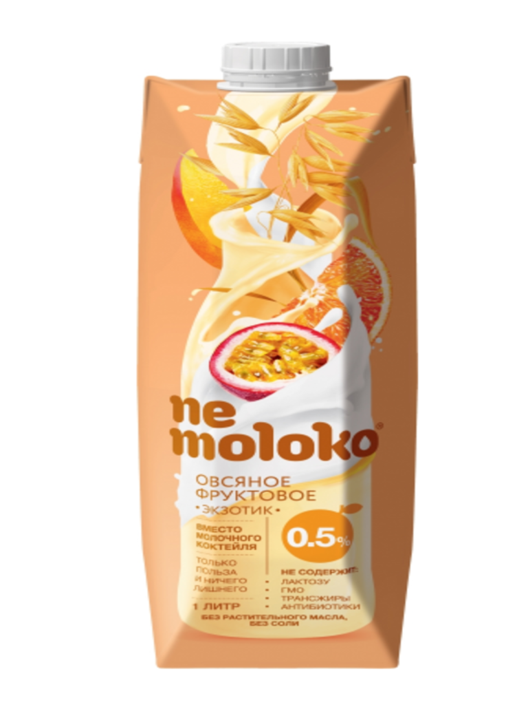

Этот продукт мы приготовили на базе Nemoloko Экстралайт, исключив из состава соль и добавив всеми любимые экзотические фрукты. Получилось божественно вкусно, легко и очень полезно! Представьте себя дегустатором и сначала оцените солнечный цвет продукта и его консистенцию и только потом сделайте первый глоток. Nemoloko овсяное фруктовое «Экзотик» это то, что нужно для отличного настроения, оно освежает и радует вкусом. Пейте охлажденным!
В Nemoloko «Экзотик» нет добавленных растительных жиров, жирность 0,5% - это жирность самого овса.Nemoloko «Экзотик» не содержит добавленные соль и сахар. В состав фруктовой части входят высококачественные соки и пюре апельсина, манго и маракуйи, в напитке нет ароматизаторов и красителей.Nemoloko «Экзотик» не обогащено дополнительно витаминами и минералами.Nemoloko «Экзотик» содержит в составе соки и пюре фруктов, каждый из которых обладает не только индивидуальным вкусом, но и свойственным только ему набором полезных веществ, который можно назвать профилем пользы.

| Энергетическая ценность, кДж (ккал) | 220 (50) |
| Белки, г | 1 |
| Жиры, г | 0,5 |
| Углеводы, г | 1 |